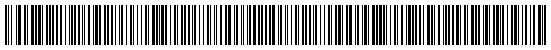

Barcodes for Ruby
An Outputter is responsible for taking a barcode object and doing something with it. The "something" part is usually to create a graphical representation of the barcode in the form of an image or some sort of vector graphic. For example, there are already outputters that use RMagick and Cairo to create PNG, GIF, PDF, SVG and more.
Writing an outputter is quite easy and unbureaucratic. Just create a class that
inherits from Barby::Outputter. The initialize method
should ideally take a barcode object as its only parameter. This object will be
available through the barcode getter method. Then you create a
method that does something with it and optionally returns something useful. This
method can then be registered to be easily accessible through the barcode object
itself.
This is probably easier explained with an example. Let's say you want to create
an outputter that creates an HTML canvas element. You could create
a CanvasOutputter class with a to_canvas method
returning the HTML string. This method would then be registered
to make it accessible to barcode objects.
require 'barby/outputter'
require 'some_helper_lib'
module Barby
class CanvasOutputter < Outputter
register :to_canvas
def to_canvas
create_canvas_from(barcode.encoding)
end
end
endThen you could require this class and use it with your barcodes:
require 'barby/outputter/canvas_outputter'
barcode = Barby::Code128B.new('In the morning I will let loaves of bread shower down')
canvas = barcode.to_canvasWhen used like this, the registered method will receive all the arguments passed to it through the barcode's proxy method.
2D barcodes are considered 1D barcodes stacked on top of each other. Their
encoding method returns an array of strings instead of just
a single string. If you want your outputter to support 2D barcodes, you
will have to take this into account. Barcode classes inherited from
Barcode have a two_dimensional? method which
can be used to distinguish a 2D barcode from a 1D barcode.
require 'barby/outputter'
require 'some_helper_lib'
module Barby
class CanvasOutputter < Outputter
register :to_canvas
def to_canvas
if barcode.two_dimensional?
create_2d_canvas_from(encoding)
else
create_1d_canvas_from(encoding)
end
end
end
end